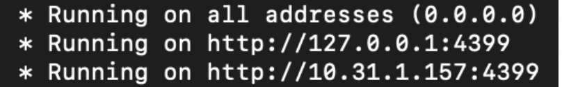

Running GUANACO from Console using system’s Python
Run Locally
To run GUANCO Locally follow the following steps:
To run and install GUANACO, only changes need to be made in the Json file and the AnnData or MuuData needs to be stored in the said folder as stated above. User also needs to make sure a stable version of Python is installed in their local machine, precisely a version of Python 3.10 or higher, if not please install Python first, then follow the mentioned steps using the terminal:
Step 1. Clone the repository
git clone https://github.com/Systems-Immunometabolism-Lab/guanaco-viz
cd guanaco-viz
It is advised to keep the Json file, and data inside this folder
Step 2. Create a virtual environment for python
Create the virtual environment:
python –m venv myenv
Or (depending on the python and OS version)
python3 –m venv myenv
Then activate it:
source myenv/bin/activate
Or For Windows
myenv\Scripts\activate
If the user is using Conda follow the following commands:
conda create -n guanaco-env
conda activate guanaco-env
If the user is using Pixi follow the following commands:
python –m venv pixienv
Or (depending on the python and OS version)
python3 –m venv pixienv
source pixienv/bin/activate
Or For Windows
pixienv\Scripts\activate
or
pixienv\Scripts\Activate.ps1
Step 3. Install from local directory
pip install .
or
pip install –e .
(for development (editable install))
or
Install from distribution files if the user has the wheel file:
pip install dist/guanaco_viz-0.1.0-py3-none-any.whl
Step 4. Run GUANACO
guanaco -c your_config.json
Along with this Json File the user can also mention the following changes, if anything different the user prefers:
guanaco -hIf the user needs any helpguanaco -d DATA_DIRIf the user doesn’t have their data in the current directory but somewhere else, they can specify using this command:guanaco -c your_config.json -d your_datadirectoryguanaco -p PORTIf the user wants to run GUANACO in a different Port than the specified 4399 or run multiple instances of GUANACO simultaneously maybe with different config files, users can run it the following way:guanaco -c your_2ndconfig.json -p your_newportguanaco --host HOSTIf the user wants to run GUANACO using a different IP other than the default 0.0.0.0, they can do it the following way:guanaco -c your_2ndconfig.json --host your_newhostguanaco --debugIf in any case the user wants to understand and/or report any error they face for guanacoguanaco --max-cells MAX_CELLSThis is because GUANACO by default, down samples data to only the top 8k cells, however, if the dataset has more than the mentioned number of cells, the user will definitely need to specify the total number of cells here in this formatguanaco -c your_2ndconfig.json --max-cells 10000, this configuration is done to save memory consumptionguanaco --seed SEEDHere the seed can be set for sub sampling of the cellsguanaco --backed-modeFor heavy dataset this is recommended, else the app may crash depending on the RAM of the device. However, we would recommend this command for running GUANACO in general more efficientlyguanaco -c your_config.json -d your_datadirectory --backed-mode. There is no need to use--max-cellsif GUANACO is run using the--backed-mode
Users can use all the help at once like guanaco -c your_config.json -d your_datadirectory -p your_newport –host yournewhost –seed 10 –debug --backed-mode. However, the users cannot use just the command guanaco to run GUANACO because guanaco needs a config file to run properly.
Or The User can also directly use our already made package
pip install guanaco
guanaco -d your_datadirectory -c your_config.json --backed-mode
Note: it is advised to keep the data file and the config file in the same directory in this case
The application will be running in http://0.0.0.0:4399/
There will also some other address provided to run the file locally in, user can choose either:
{kind=link}
Deploy in Server
To deploy GUANCO in the users AWS or any other Cloud Server follow the following steps:
To run and install GUANACO, only changes need to be made in the Json file and the AnnData or MuuData needs to be stored in the said folder as stated above.
Please note that the user must connect to their server for deployment. Connection can be made to the server using the following command (this depends completely on the server)
ssh -i ~/filepath/my-aws-key.pem instance-name@<EC2_PUBLIC_IP>
Note: The instance name is mostly the name of the OS image used for the server like ubuntu or ec2-user for linux, in this case ubuntu is much preferable as it comes with updated version of python, however this again depends on the server operator
[This is Optional] User can also add NGINX as an added layer of security if not already done, however, NGINX is highly recommended for URL configuration and also if the link is shared with others
User also needs to make sure a stable version of Python is installed in the server, precisely a version of Python 3.10 or higher, if a lower version of Python is available it is advised to update the python version, then follow the mentioned steps using the terminal:
Step 1. Clone the repository
git clone https://github.com/Systems-Immunometabolism-Lab/guanaco-viz
cd guanaco-viz
It is advised to keep the Json file, and data inside this folder. The users can upload the files in the server using terminal command: scp -i /path/to/your-key.pem /path/to/your/file ubuntu@EC2_PUBLIC_IP:/home/ubuntu/ or manual uploading through the interface. However, if the user is copying the repository in the server from interface, make sure the Json file and the AnnData in the folder as mentioned above.
Step 2. Create a virtual environment for python
python –m venv myenv
Or, depending on the python version
python3 –m venv myenv
Or, if the instance default python is lower than 3.10, it is recommended to install a higher version and use this
python3.10 –m venv myenv
source myenv/bin/activate
If the user is using Conda follow the following commands:
conda create -n guanaco-env
conda activate guanaco-env
If the user is using Pixi follow the following commands:
python –m venv pixienv
Or (depending on the python and OS version)
python3 –m venv pixienv
source pixienv/bin/activate
Or For Windows
pixienv\Scripts\activate
Step 3. Install from local directory
pip install .
or
pip install –e .
(for development (editable install))
or
Install from distribution files if the user has the wheel file:
pip install dist/guanaco_viz-0.1.0-py3-none-any.whl
Step 4. Run GUANACO
nohup guanaco -c your_config.json --backed-mode &
Along with this Json File the user can also mention the following changes, if anything different the user prefers:
guanaco -hIf the user needs any helpguanaco -d DATA_DIRIf the user doesn’t have their data in the current directory but somewhere else, they can specify using this command:guanaco -c your_config.json -d your_datadirectoryguanaco -p PORTIf the user wants to run GUANACO in a different Port than the specified 4399 or run multiple instances of GUANACO simultaneously maybe with different config files, users can run it the following way:guanaco -c your_2ndconfig.json -p your_newport. However, make sure this port has been given the permission to be accessed in the security groups.guanaco --host HOSTThis is not encouraged to use for server as each server comes with a default public IP and also this IP will be used to map any possible web url.guanaco --debugIf in any case the user wants to understand and/or report any error they face for guanaco. Not recomended for severguanaco --max-cells MAX_CELLSThis is because GUANACO by default, down samples data to only the top 8k cells, however, if the dataset has more than the mentioned number of cells, the user will definitely need to specify the total number of cells here in this formatguanaco -c your_2ndconfig.json --max-cells 10000, this configuration is done to save memory consumptionguanaco --seed SEEDHere the seed can be set for sub sampling of the cellsguanaco --backed-modeFor heavy dataset this is recommended, else the app may crash depending on the RAM of the device. However, we would recommend this command for running GUANACO in general more efficientlyguanaco -c your_config.json -d your_datadirectory --backed-mode. There is no need to use--max-cellsif GUANACO is run using the--backed-mode
Users can use all the help at once like guanaco -c your_config.json -d your_datadirectory -p your_newport –seed 10 --backed-mode. However, the users cannot use just the command guanaco to run GUANACO because guanaco needs a config file to run properly.
Or The User can also directly use our already made package
pip install guanaco
nohup guanaco -d your_datadirectory -c your_config.json --backed-mode &
Note: it is advised to keep the data file and the config file in the same directory in this case
The application will be running in http://<instance-public-ip>:4399/ (or the url the IP is mapped to)